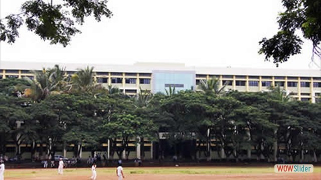

.png)
K.K Wagh Education Society's
K.K.Wagh Polytechnic, Nasik
Affiliated to MSBTE Mumbai,Approved by AICTE New Delhi,DTE Mumbai.
Vision
"Strive to empower students with Quality Technical Education."
Mission
"Committed to develop students as Competent and Socially Responsible Diploma Engineers by inculcating learning to learn skills, values and ethics, entrepreneurial attitude, safe and Eco-friendly outlook and innovative thinking to fulfill aspirations of all the stakeholders and contribute in the development of Organization, Society and Nation."

About K. K. Wagh Polytechnic Institute
The institute was established in the year 1983 at Bhausaheb Nagar, Dist. Nashik,
later shifted to Hirabai Haridas Vidyanagari, Nashik in 1992.
It is fully developed and has excellent infrastructure with sprawling lush green campus named Hirabai Haridas Vidyanagari.
K. K. Wagh education society has got permission to start 2nd shift in the exsting K. K. Wagh Polytechnic from
the acadamic year 2008-09."
Departments In k.k Wagh Polytechnic
1.Computer Technology
2.Mechanical Department
3.Electrical Department
4.Electronics Department
5.Civil Department
Go to K.K.Wagh
Gallery